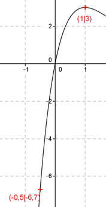
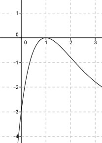

Aufgabe 127 Ergänzen Sie die Wertetabelle für den Graphen: y = 3 * x * e-x+1 x -0,5 1 y -6,7 3 y = f(-0,5) = 3 * (-0,5) * e-(-0,5)+1 = = -1,5 * e1,5 = - 6,7 gerundet  An welchen Stellen x die Funktion den Wert 3 annimmt, ist elementar nicht zu ermitteln. Abgelesen: Es ist eine Stelle. Zur Berechnung wendet man ein Näherungs- verfahren an, hier die Regula falsi. fx = 3 eingesetzt: 3 = 3 * x * e-x+1 | -3 0 = 3 * x * e-x+1 - 3 Als Funktion: y = 3 * x * e-x+1 - 3  Die Nullstellen dieser Funktion (y = 0) entsprechen den gesuchten Werten für x. Regula falsi: x0 = gesuchte Nullstelle x1 * |y(x2)| + x2 * |y(x1)| x0 = ------------------------------ |y(x1)| + |y(x2)| Abgelesen: Nullstelle zwischen 0,9 und 1,1. (Durch Probieren ermittelt: 3 * 1 * e-1+1 = 3 * e0 = 3 d. h. Nullstelle bei x = 1) Nullstelle x0 zwischen 0,9 und 1,1 mit Excel ermittelt: A B C D E F G H I J 0,9 1,1 0,0140 0,0161 0,0126 0,0177 0,0303 0,0301 1,0069 -0,0001 0,9 1,0069 0,0001 0,0161 0,0001 0,0162 0,0162 0,0161 1,0064 -0,0001 0,9 1,0064 0,0001 0,0161 0,0001 0,0162 0,0162 0,0161 1,0060 -0,0001 0,9 1,0060 0,0001 0,0161 0,0000 0,0162 0,0162 0,0161 1,0057 0,0000 Die gesuchte Nullstelle ergibt sich nach mehreren Näherungen mit ausreichender Genauigkeit zu x0 = 1 gerundet. Weitere Erläuterungen zur Tabelle siehe Aufgabe 101.